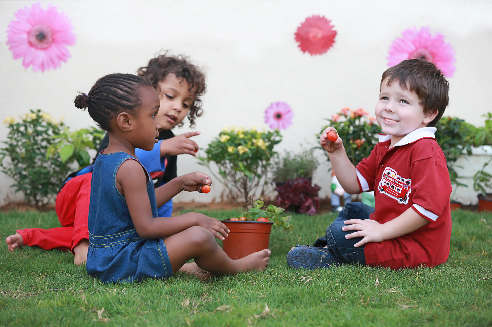
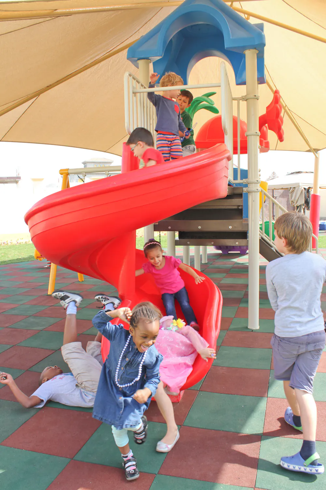

Hello, and carpet time
Children come into the classroom with you, or with the Breakfast Club teacher. Bags and lunch boxes go in their drawer, water bottles in the basket. At 9:10 we sit on the carpet and talk about what we'll learn today.

A British nursery in Ras Al Khaimah, from 8-week-old babies to the Foundation Stage.
We follow the British Early Years Foundation Stage, the framework used in nurseries across the UK, for children from 8 weeks old up to school age.
Our teachers hold British teaching credentials and have years in early years education. Children learn through play, indoors and in our outdoor play areas, and we keep you posted through the day on our parents' app.
From the baby class up, each class has Arabic woven into play and music.
A weekly Music & Movement session, linked to the class topic. No extra fee.
Excursions and field trips go in our own transport.

Each class has its own routine and teacher observations. The younger classes follow your child's home routine for milk, meals and naps, and every class works through the seven EYFS areas of learning.

Babies, with a sleep room set up for naps as at home.

A small group, sensory play inside and in the garden.

New words, new friends, and toilet training.

Small-group work and more independence.

A busy year that gets your child ready for school.
The Foundation Stage timetable from our parents' pack. Snack and nap times shift to fit your child's own routine, and you get a daily report at pick-up.
Children come into the classroom with you, or with the Breakfast Club teacher. Bags and lunch boxes go in their drawer, water bottles in the basket. At 9:10 we sit on the carpet and talk about what we'll learn today.

Mark making, painting, construction, role play, sand and water. Outside when the weather allows, so please pack sun cream and a hat.

Snacks and meals come from home, labelled with your child's name. We're a nut-free nursery, and water is there all day.

In our outdoor play area in the cooler months, and in the indoor play area when it's too warm. Then more activities, lunch at 12 and play again.

We meet on the carpet to share what we did, with a closing song or a book. You collect from the classroom; children staying for After School Club are collected by a member of staff.
The nursery day runs 9 to 1. For parents who start early or finish late, the clubs stretch it at both ends, every day or now and then.
Children eat breakfast together (packed from home), then crafts and games until class starts. There's always a qualified first aider on site.
For later pick-ups, and for older brothers and sisters after their own school. Little ones nap in our sleep room first. We can warm dinners and keep food in the fridge.
In the school holidays: full or half days, whole weeks or a few days, all on a theme. Hours differ in Ramadan.
Fees for the clubs: email us and we'll send them.

You don't have to wait for pick-up to know how the day went.



Come and see the classrooms before you decide. Call the branch, or email us a day and time that suits you.
Minsk Street, Al Jazeerah Al Hamra, Ras Al Khaimah
GPS 25.698058, 55.796396